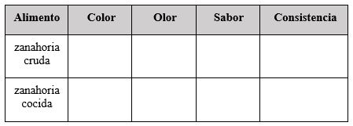

Experiencias

¿Qué vimos hoy?


Matemáticas
Jueves 30 de Abril
Responde las siguientes preguntas y guárdalas en tu carpeta de experiencias para que, en cuanto sea posible, se las entregues a tu maestra o maestro.
Del video Matemática divertida: Interpreta datos representados en pictogramas y gráficos:
- ¿De qué forma puedes acomodar datos en un pictograma?
- ¿Qué dibujos o figuras puedes utilizar en un pictograma?
- ¿De qué crees que sirve acomodar los datos en ese tipo de tablas?
De los videos, Matemática divertida: Elabora tablas de conteo y gráficos de barras y Matemática divertida: Interpreta datos representados en Tablas de conteo:
- ¿Para qué sirve una tabla de conteo?
- ¿Cuáles son las similitudes y diferencias entre un pictograma y una tabla de conteo?
- ¿Qué datos puedes registrar en una tabla de conteo?, ¿tú ya lo has hecho antes, cuándo?
De los videos Interpretación de gráfico de barras e Interpretación de datos:
- ¿Qué información podrías registrar en tablas o pictogramas?
- ¿Qué uso le puedes dar a las tablas de datos o pictogramas en tu vida diaria?
- ¿Qué utilidad podría tener la interpretación de tablas o gráficas en lo cotidiano?, ¿lo has hecho?
Actividades adicionales
Si quieres practicar más sobre este tema, te invitamos a realizar la siguiente actividad:
Cuenta las cucharas, tenedores y cuchillos que hay en la cocina de tu casa. Decide cómo representar la información: a través de una gráfica de barras, una tabla de conteo o un pictograma ¿Cuál crees que es la mejor forma de representarla? Explica por qué. Elabora tu gráfica en una hoja.
Platica con tu familia sobre lo que aprendiste, seguro les parecerá interesante y podrán decirte algo más.
Video 1.- Matemática Divertida: Elabora tablas de conteo y gráficos de barros
https://youtu.be/gGm-Qj0Sx9g
Video 2.- Interpretación de gráfico de barras (La tienda)
https://youtu.be/U5TJAtsyv0M
Ciencias Naturales
Jueves 30 de Abril
Responde las siguientes preguntas y guárdalas en tu carpeta de experiencias para que, en cuanto sea posible, se las entregues a tu maestra o maestro.
Del video Ciencia en Esencia - Ciencia en la cocina:
1. ¿Cuáles son algunos de los procesos químicos y físicos que se realizan en la cocina para preparar los alimentos?
2. ¿Cómo influyen los procesos de cocción en la consistencia de los alimentos, en sus sabores y en sus propiedades?
3. Piensa en el platillo que más te guste, pídele a algún familiar que te explique cómo se prepara; a partir de ello observa cómo influye la temperatura y el tiempo para cocinarlo.
Del video Huevos. El cocinero científico. Proyecto G:
4. A partir de lo que aprendiste en ambos videos, describe las diferencias entre el huevo cocido, el huevo estrellado y el huevo revuelto, y explica con tus palabras a qué se deben.
5. ¿A qué se refiere el chef científico cuando dice que las proteínas de la clara y la yema de huevo se desnaturalizan?
6. Pide ayuda a algún familiar. Investiguen qué otros alimentos contienen proteínas ¿cómo cambian cuando los calientan durante un tiempo? ¿En qué es similar y en que difiere al cambio que ocurre con el huevo?
Actividades adicionales
Si quieres practicar más sobre este tema, te invitamos a realizar la siguiente actividad:
Si tienes zanahorias en tu cocina, pide a tu papá o mamá que te ayude a cocer una. Completa el siguiente cuadro, probando la zanahoria cruda (bien lavada y desinfectada) y la zanahoria cocida:

¿Cómo te gusta más la zanahoria, cocida o cruda? ¿Por qué?
¿Has probado los siguientes alimentos crudos y cocidos: manzana, cebolla, jitomate? ¿Cómo te gustan más?
Platica con tu familia sobre lo que aprendiste, seguro les parecerá interesante y podrán decirte algo más.
Video 1.- Ciencia en Esencia - Ciencia en la cocina
https://youtu.be/ycUfdrIn_SE
Video 2.- Huevos - El Cocinero Científico - Proyecto G
https://youtu.be/ejlFjK7giD8
Valores
Jueves 30 de Abril
Responde las siguientes preguntas y guárdalas en tu carpeta de experiencias para que, en cuanto sea posible, se las entregues a tu maestra o maestro.
Del video Igualdad y no discriminación:
- ¿Cómo deciden los personajes de este video qué van a jugar?
- ¿Quién quiere que se dividan los equipos entre hombres y mujeres, y por qué?
- ¿Quiénes no están de acuerdo en que los equipos se dividan entre hombres y mujeres y por qué?
- Según tu opinión, ¿las niñas son más débiles que los niños, o no lo son? ¿Por qué?
Del video El talento de Cristina:
- ¿Cuál es la habilidad de Cristina?
- ¿Quién de los compañeros de Cristina actuó de forma correcta?
- ¿Qué debería modificar Balvina para no discriminar a nadie?
- Escribe los prejuicios que pudiste identificar en el video.
Platica con tu familia sobre lo que aprendiste, seguro les parecerá interesante y podrán decirte algo más.
Video 1.- Igualdad y no discriminación
https://youtu.be/-4o6tQkJdwo
Video 2.- El talento de Cristina
https://youtu.be/FMl2HEatZGI
Lenguaje
Jueves 30 de Abril
Responde las siguientes preguntas y guárdalas en tu carpeta de experiencias para que, en cuanto sea posible, se las entregues a tu maestra o maestro.
Del video El Folleto:
- ¿Qué características importantes recuerdas que debe tener un folleto?
- ¿En dónde has encontrado o has recibido folletos?
- ¿Cuáles son los temas que has encontrado en folletos que has tenido en tus manos?
Del video Tríptico de lectura:
- ¿Cuáles son los materiales que usaron las niñas y los niños que elaboraron esos folletos?
- ¿Qué necesitaron saber antes de elaborar el folleto?
Del video El folleto:
- ¿Qué es lo que no sabías acerca de los folletos?
- ¿Cuál es el tema sobre el cual vas a elaborar tu propio folleto? Si prefieres, comenta en casa sobre algún tema interesante.
- ¿Quién o quiénes crees que van a leer tu folleto?, ¿qué les quieres comunicar?
Actividades adicionales
Si quieres practicar más sobre este tema, te invitamos a realizar la siguiente actividad:
- Elabora un folleto dirigido a niños y niñas, sobre las medidas de salud e higiene que deben seguir durante la epidemia del COVID-19 para evitar contagios.
- En el siguiente sitio puedes encontrar información para elaborar tu folleto: https://coronavirus.gob.mx/ninas-y-ninos/
Platica con tu familia sobre lo que aprendiste, seguro les parecerá interesante y podrán decirte algo más.
Video 1.- El Folleto
https://youtu.be/Qb8yoQnRfAc
Video 2.- Tríptico de lectura
https://youtu.be/dddg2HPeQeM
Video 3.- El Folleto
https://youtu.be/LkDqaxRjLHA